FINAL PROJECT
Análisis de los componentes del PBI de Argentina
AGREGADOS MACROECONÓMICOS
| Variables | Descripción |
|---|---|
| GDP | Producto bruto interno |
| Consumptions | Consumo realizado por los agentes económicos. |
| Govt expenditure | Gasto realizado por el estado. |
| Exports | Montos totalizados en concepto de exportaciones de bb. ss. |
| Imports | Montos totalizados en concepto de importaciones de bb. ss. |
| Net Exports | Flujos totalizados de exportaciones netas argentinas. |
GRÁFICOS DE CADA SERIE
✓ GDP
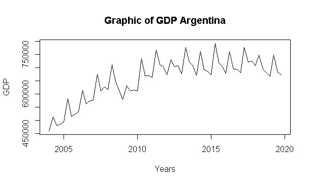✓ Consumption
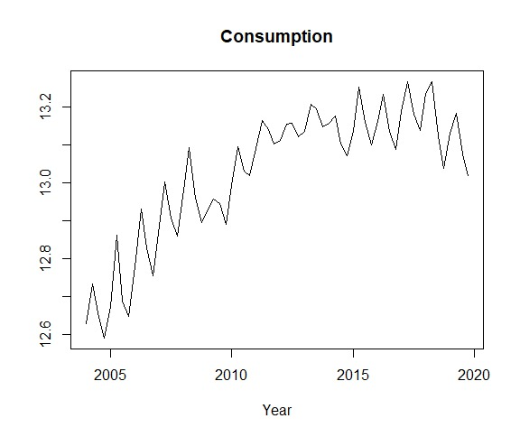✓ Government Expenditure
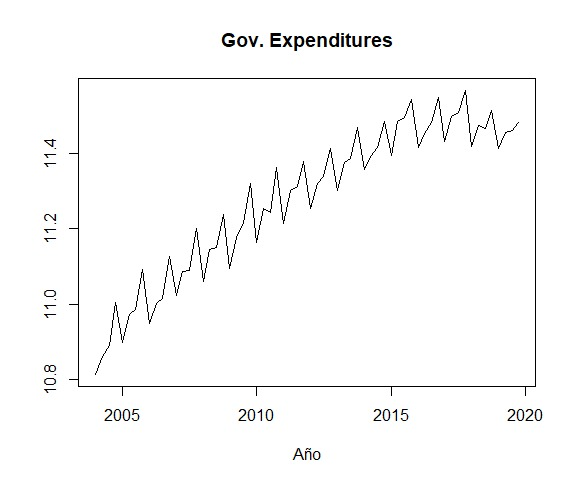✓ Investment
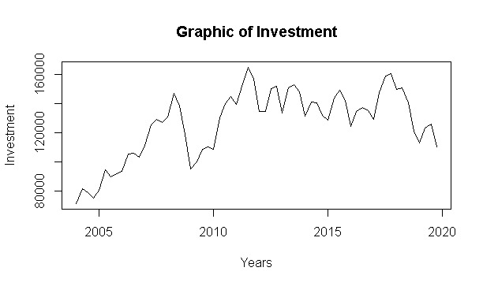✓ Net Exports
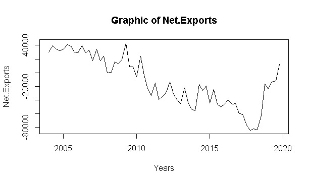Filtros HP, BK, BN y el componente cíclico.
Se ha tomado logartimos de cada serie, excepto de las exportaciones netas (XN)
Filtro Hodrick-Prescott
✓ Consumption
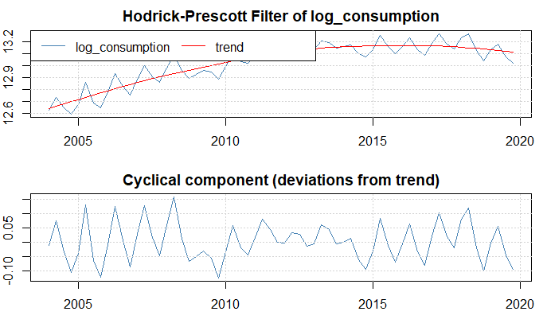✓ Government Expenditure
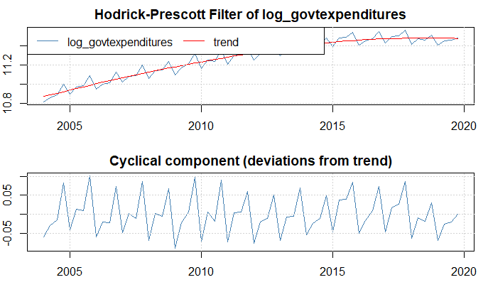✓ Investment
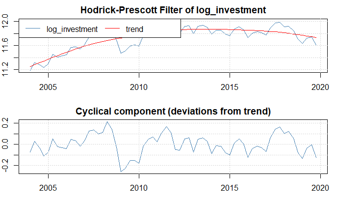✓ Net Exports

Filtro Baxter-King
✓ Consumption
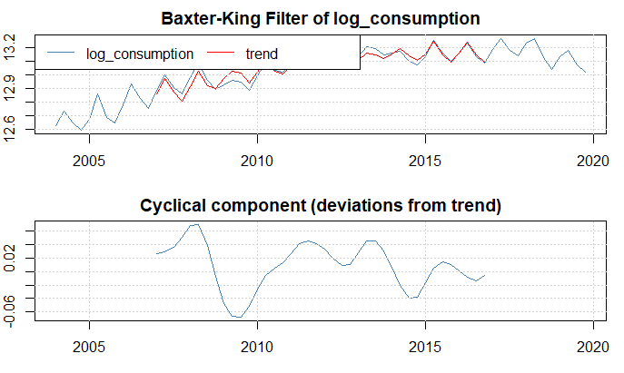✓ Government Expenditure

✓ Investment
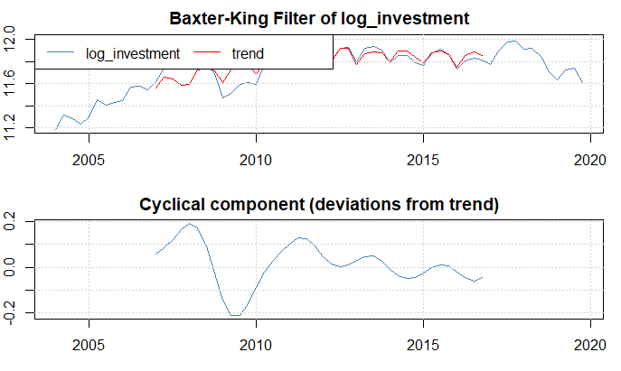✓ Net Exports
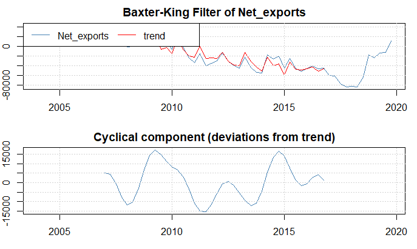Descomposición de Beveridge-Nelson
✓ Consumption
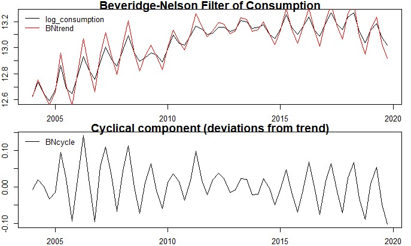✓ Government Expenditure

✓ Investment
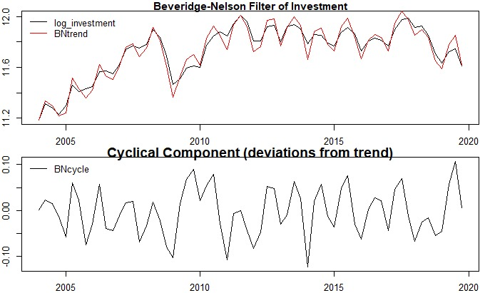✓ Net Exports
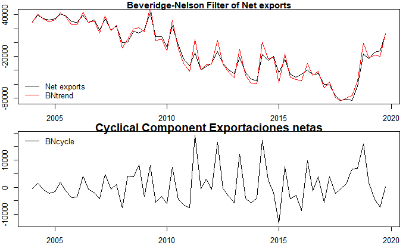ANÁLISIS DEL CICLO ECONÓMICO
Consumption
Economic cycle
Cyclicity
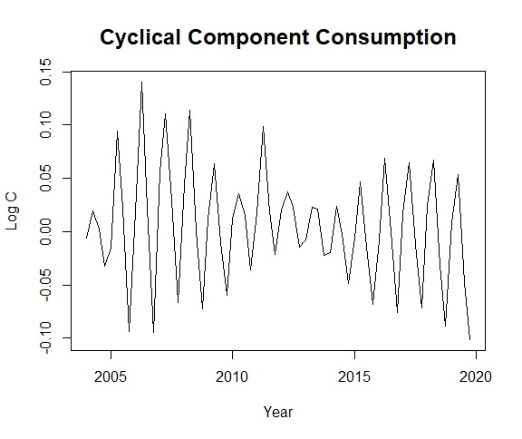Government Expenditure
Economic cycle
Cyclicity
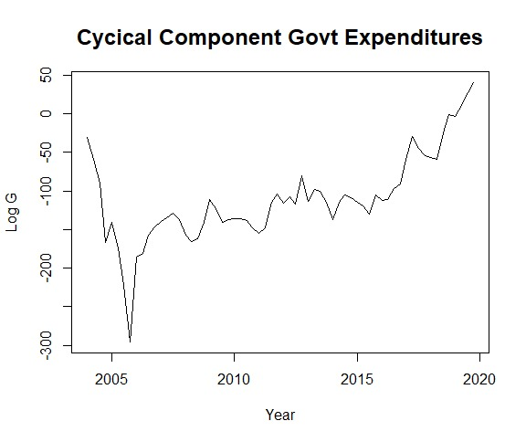Investment
Economic cycle
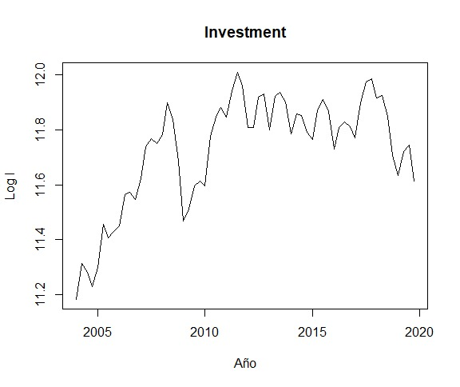Cyclicity
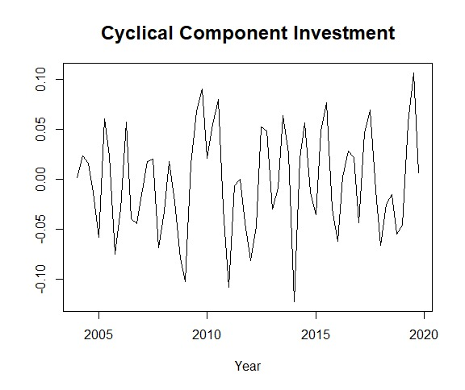Imports
Economic cycle
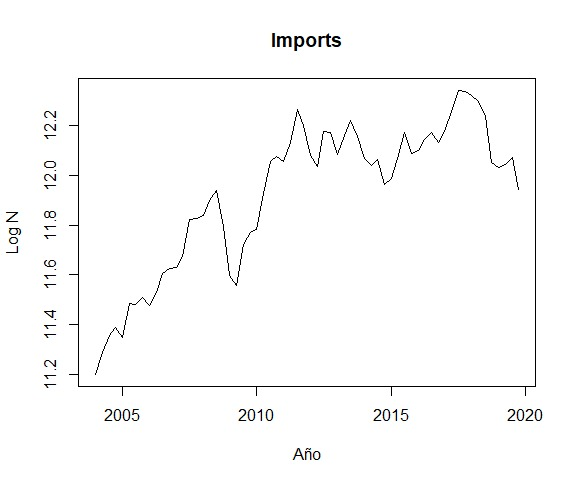Cyclicity
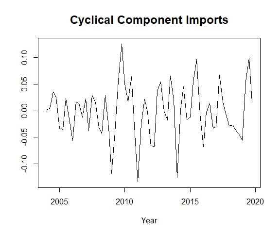Exports
Economic cycle
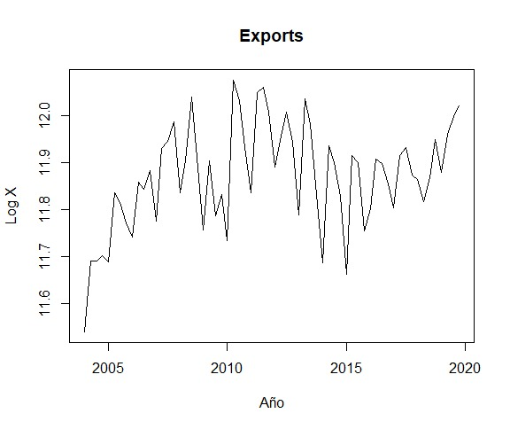Cyclicity
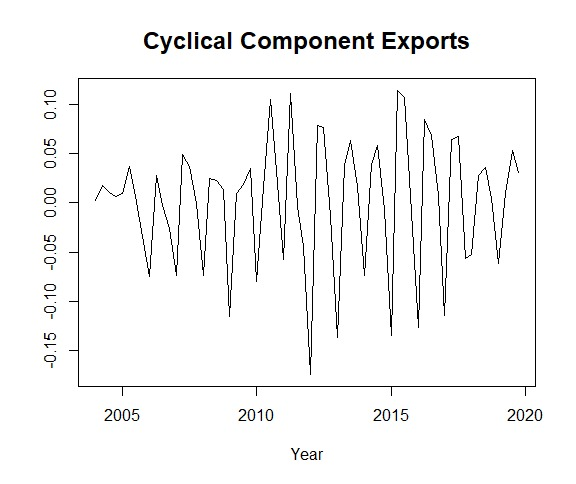Net Exports
Cyclicity
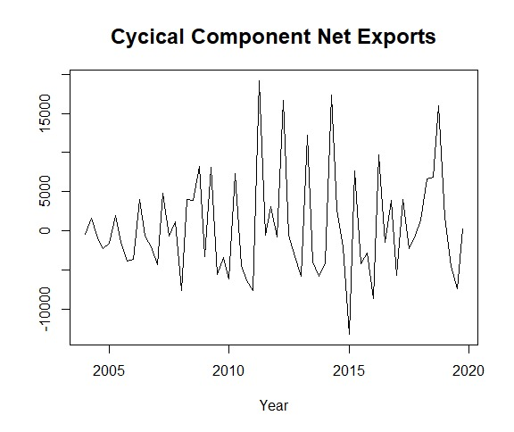Análisis de volatilidad del PBI
Aplicamos el Filtro Hodrick-Prescott al logaritmo del GDP
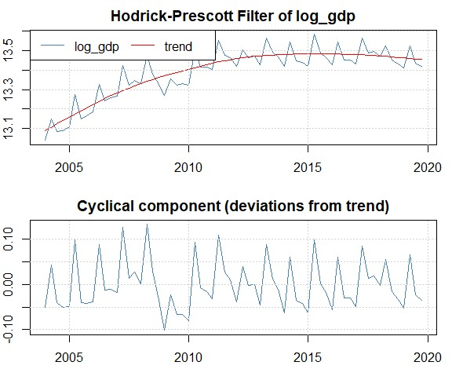Aplicamos el Filtro Baxter-King al logaritmo del GDP
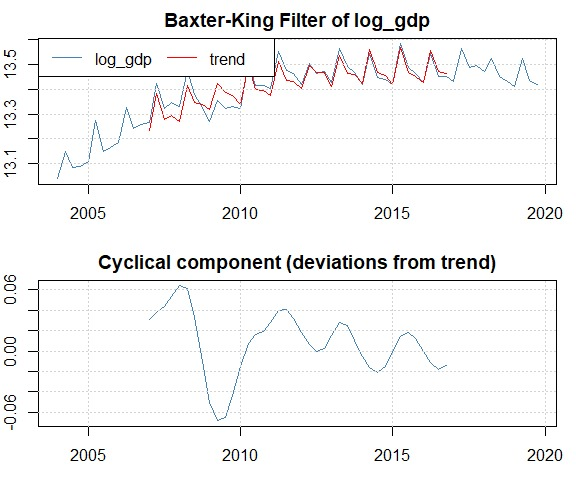Aplicamos la Descomposición de Beveridge-Nelson al logaritmo del GDP
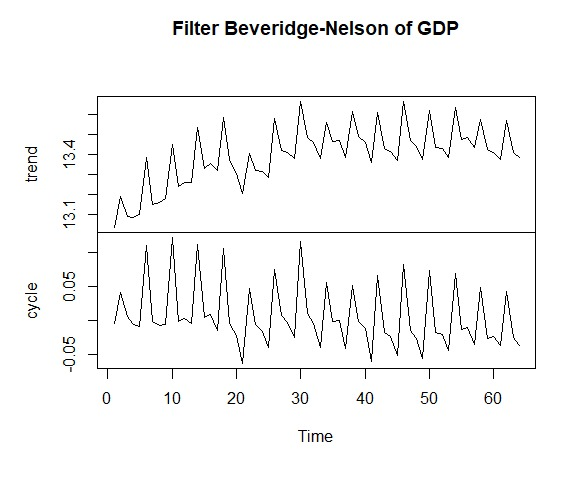CORRELACIONES DE LA VARAIBLES APLICANDO PEARSON
| Variables | Nivel de correlación |
|---|---|
| Consumption | 0.1629172 |
| Govt expenditure | 0.3534565 |
| Net Exports | 0.32003 |
| Investment | 0.1790598 |